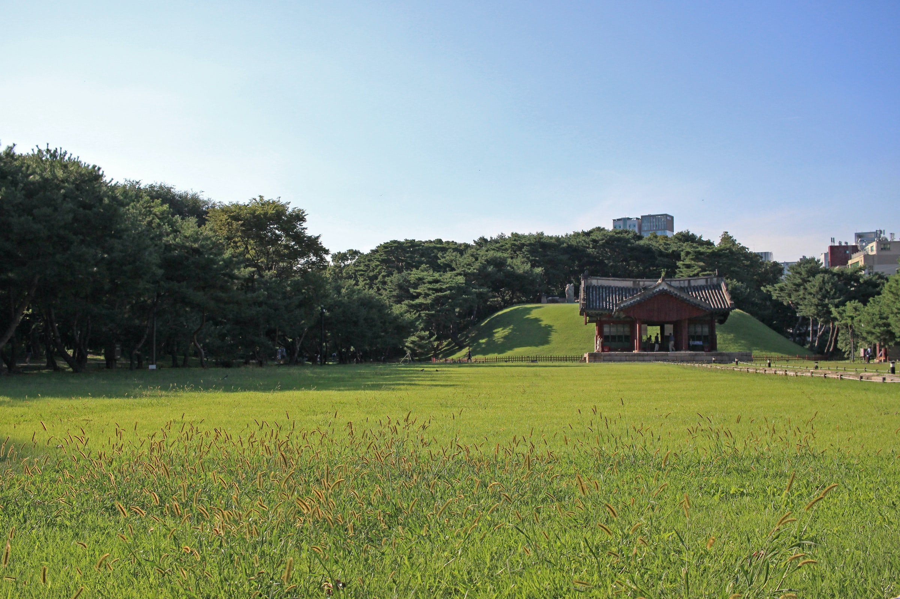

Discover Korea
Experience the extraordinary atmosphere of South Korea, a beautiful country, whose landscapes enchant with incomparable beauty, an unique cuisine surprises with original flavours and cities attracts tourist from all over the world.


